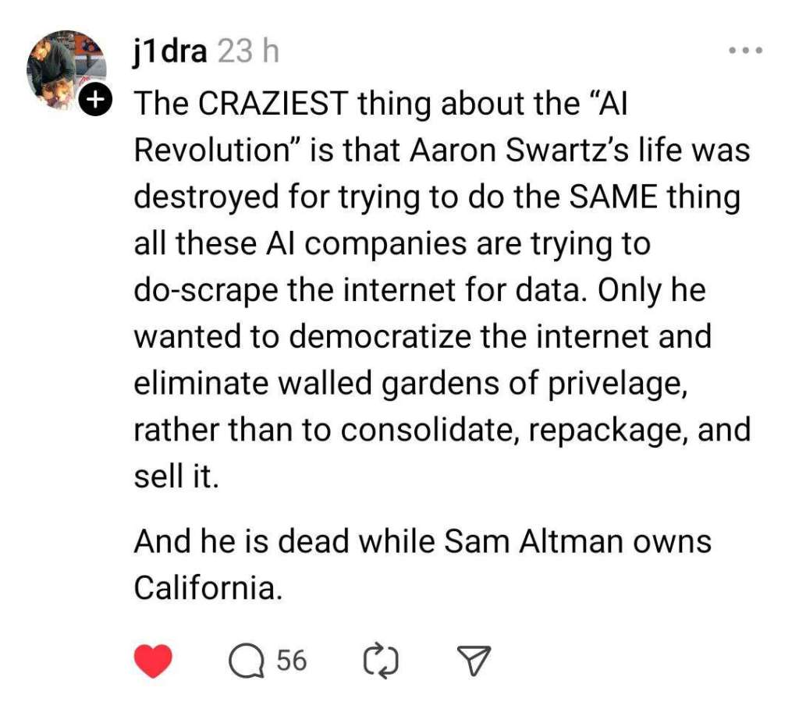

Tecnologia e Classe de 18/07/24
Notícias rápidas
Meta suspende recursos de IA e coleta de dados no Brasil: a decisão foi tomada em resposta à exigência da Autoridade Nacional de Proteção de Dados para que a empresa cessasse o uso de dados pessoais de usuários no treinamento de seus modelos, afetando plataformas e funcionalidades como criação de figurinhas no WhatsApp com a tecnologia. A Meta afirma estar em diálogo com a ANPD para garantir a conformidade com as normas de proteção de dados. As informações são dos sites Olhar Digital e Correio Braziliense.
https://tecnoblog.net/noticias/meta-suspende-ia-generativa-no-brasil-apos-pressao-da-anpd/
INFOSEC
Profissionais de tecnologia estão descontentes com falta de entendimento sobre problemas de segurança por +chefes de outras áreas: 60% dos líderes “não-TI” estão “muito” ou “extremamente” confiantes de que suas organizações são capazes de prevenir um ataque cibernético destrutivo nos próximos 12 meses, enquanto apenas 46% dos especialistas na área compartilham esse pensamento. Considera-se que líderes não técnicos estejam mais focados nos impactos financeiros e reputacionais de vulnerabilidades. As informações são do site TechRadar.
Portal GovBR passará a aceitar denúncias e petições relacionadas à Lei Geral de Proteção de Dados: as reclamações poderão ser enviadas utilizando uma conta ou de forma anônima, podendo envolver casos sobre vazamento de dados, exigências abusivas de informações e situações onde empresas e órgãos públicos não respondem a uma solicitação de resgate dos dados armazenados. As informações são do site Tecnoblog.
Indonésia é alvo de ataque hacker e descobre que 98% dos dados governamentais não possuem backup: o grupo “Brain Cipher” utilizou uma variante do malware LockBit 3.0 para extrair dados sensíveis e criptografar os servidores, afetando mais de 230 agências públicas, ministérios, serviços de imigração e operações em aeroportos. Um oficial do governo descreveu a falta de backups como uma "estupidez", destacando uma grave falha na governança e na política de TI. As informações são do site TechRadar.
País da Liberdade ataca novamente
Kaspersky decide encerrar operações nos EUA e demitir seus funcionários: a decisão ocorre após proibição imposta pelo Departamento de Comércio do país em junho deste ano, que a empresa planejava contestar judicialmente, mas voltou atrás ao avaliar o impacto das exigências legais. O encerramento das operações será gradual, a partir do dia 20 deste mês. As informações são do site Zero Day.
Relembrar é viver
Pesquisa realizada pela Comissão Federal de Comércio dos EUA indica que 76% dos serviços de assinatura implementam “dark patterns” em suas plataformas: a análise, que abrangeu 642 sites e aplicativos, identificou métodos utilizados pelas empresas, como impedir que renovações automáticas de assinaturas sejam desativadas, preenchimento obrigatório de informações de pagamento para participar de testes gratuitos e pré-seleção automática de opções mais lucrativas de assinatura. Os nomes dos serviços envolvidos não foram revelados. As informações são do site TechCrunch.
Amazon alega que 100% de seus data centers operam com energia limpa, mas funcionários contestam: os colaboradores argumentam que, com os dispositivos funcionando 24 horas por dia, não é garantido que eles utilizem energia renovável durante à noite, horário no qual aparelhos solares não operam, por exemplo. O grupo sugere que a Amazon adote a abordagem do Google, que busca utilizar energia livre de carbono 100% do tempo em todas as suas plantas. As informações são do site Fast Company.
https://sustainability.aboutamazon.com/climate-solutions/carbon-free-energy?energyType=true
Humor Piada$
Microsoft admite limitações de PCs Copilot+ sobre incompatibilidade com drivers e softwares: a empresa explica que certos hardwares e aplicativos, como programas antivírus, só irão funcionar se forem projetados especificamente para Windows 11 com Arm. Jogos online também podem apresentar problemas para executar, devido à falta de compatibilidade com softwares anti-trapaça. Mais detalhes estão disponíveis na página de FAQ da Microsoft. As informações são do site TechRadar.
Diretor de IA da Microsoft afirma que conteúdos na web são como “freewares” para treinar modelos de linguagem, a menos que proprietários de sites declarem explicitamente o contrário: para Mustafa Suleyman, há um entendimento de que os dados na internet são de “uso justo”, permitindo que qualquer pessoa copie, recrie e reproduza o material de maneira gratuita. As informações são do site Slashdot.

YouTube anuncia ferramenta que utiliza IA para remover músicas protegidas por direitos autorais sem prejudicar vídeos: a novidade está disponível no Studio, com opções para silenciar, substituir ou remover o áudio por completo de forma precisa, sendo útil para criadores de conteúdo que dependem da monetização pelo programa de parceria do YouTube. As informações são do site TechRadar.
Signal, aplicativo de mensagens rival do WhatsApp e Telegram, armazena chaves de criptografia em texto simples na versão de desktop para macOS e Linux: pesquisadores de segurança utilizaram um script Python que copia o diretório de armazenamento local do mensageiro em um Mac e transfere os dados para uma instalação virtual do sistema operacional, permitindo clonar a sessão com todo o histórico de conversas, sem que o Signal emita qualquer aviso. No Windows, as chaves são armazenadas no arquivo “config.json” do diretório AppData. Recomenda-se que usuários desvinculem dispositivos desktop de suas contas. As informações são do site Stack Diary.
Navegador web construído totalmente do zero e financiado pelo cofundador do GitHub, não utilizará “nenhum código” de softwares rivais: o Ladybird é um projeto open-source, atualmente em estágio pré-alfa e com uma equipe de apenas três funcionários até o momento, que além dos desafios técnicos, precisará concorrer com Chrome, Safari e Edge, que juntos dominam 88% do mercado. Mais detalhes estão disponíveis no repositório “LadybirdBrowser/ladybird” do GitHub. As informações são do site DevClass.